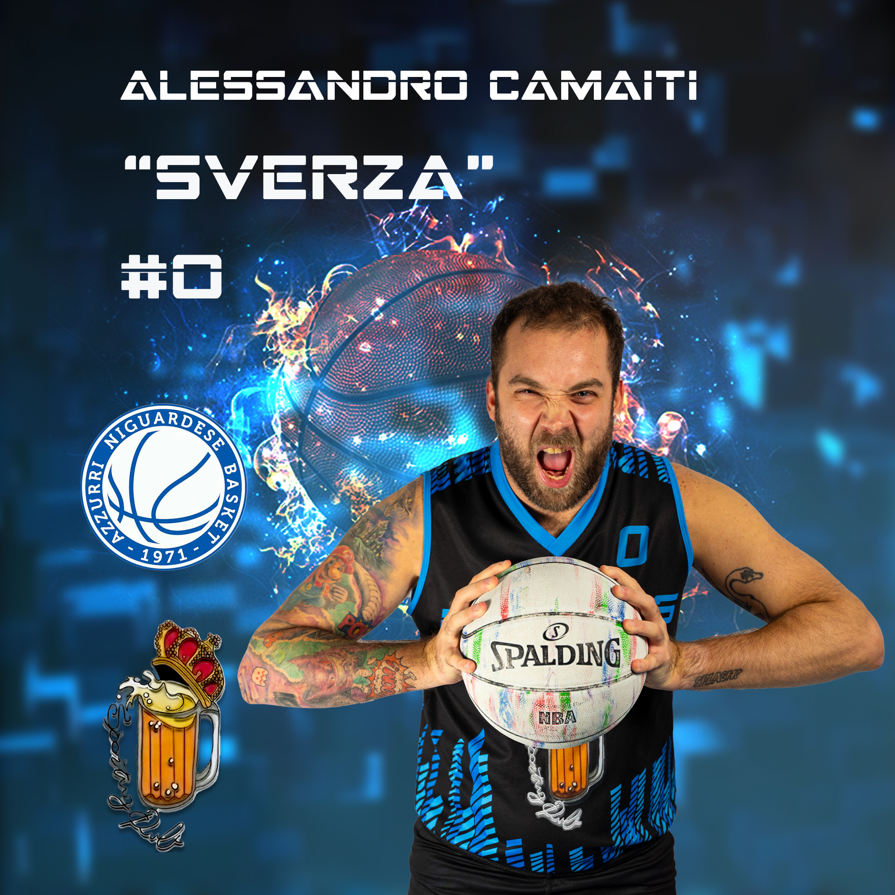

Descrizione
| Data di Nascita | 08/03/1990 |
|---|---|
| Età | 34 |
| Ruolo | Ala |
| Altezza | 1.82 m |
| Soprannome | sverza |
Cresciuto nelle giovanili della Rondinella Sesto, una volta raggiunta la maggiore età cestistica e passato ai senior, decide di provare nuove esperienze.
E' così che conosce nel 2011 i ragazzi degli Azzurri Niguardese: la storia è scritta ormai, e dopo anni passati tra il ruolo di giocatore, allenatore, dirigente accompagnatore e scorer, decide che è il momento di prendere in mano la situazione. Nascono così i Brewers, ma questa, è tutta un'altra storia..
